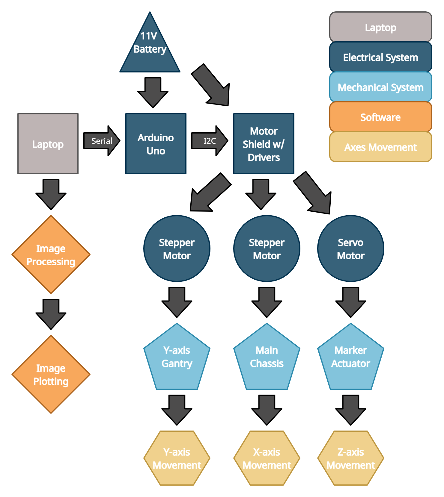
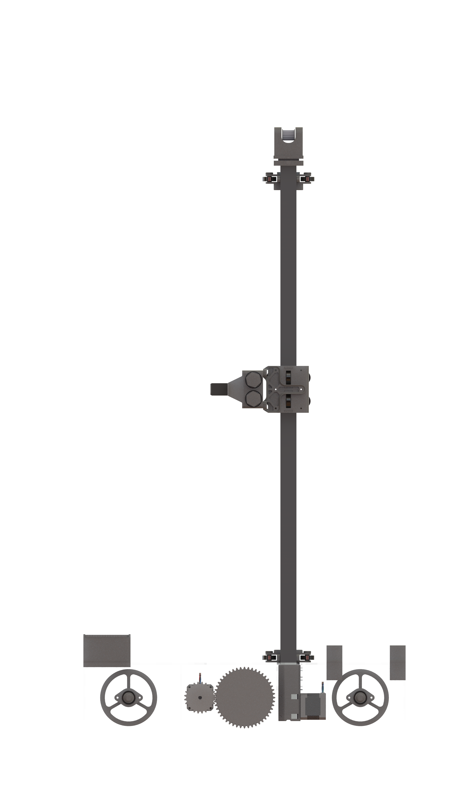

Final System
Integration and Iteration
Integration
-

This diagram is a demonstration of the integration of our electrical, mechanical, and software systems. As shown, the battery is connected to the Arduino Uno and the motor shield with drivers, which is linked to all three motors. These motors enable the Y-axis gantry, main chassis, and marker actuator movement in Y,X, and Z axes. The laptop, which hosts all image processing and plotting scripts, communicates to the Arduino Uno via serial connection.
Mechanical
The mechanical system is broken down into three key subsystems, the drive base, vertical elevator, and the marker actuator.
The priority for the drive base is to have a design that could quickly and easily be manufactured and assembled. Due to this priority, the chassis was designed to be made out of flat sheets that could be quickly manufactured on a laser cutter. Additionally, the subsystem was designed to mostly snap into place. This is so that it could be easily disassembled for servicing without any tools. In addition to the chassis, the drive base is made up of a propulsion system which consists of a single driven wheel, and two stabilizing wheels. The driven wheel is powered by a Neema-17 stepper motor through a 2:1 gear ratio. It was decided to use a gear reduction because it made the packaging much more compact and made the traversing more precise as a single step on the stepper correlates to a smaller unit of translation. The driven wheel is coated in neoprene foam to increase traction and prevent any slipping to insure an accurate drawing.
The priority for the vertical elevator is to have a design that could move quickly and smoothly. In order to achieve vertical travel, we had to implement a way to drive linear motion. For linear motion, we decided to go with a bearing carriage and rail system that is powered by a belt and stepper. This system was chosen primarily due to the cost and time to acquire parts. This design also has the added benefit of being aesthetically pleasing and safe as there is no way for a user to get pinched by the belt. The carriage was designed to be as rigid as possible to avoid adding any unnecessary compliance to the system. To achieve this, 12 bearings were used to achieve a constrained fit around the aluminum tube. All parts except for the rail, belt, and bearings were 3D printed so that parts could be quickly iterated upon and improved. This system allows for smooth and consistent vertical travel.

The priority for the marker actuator is to have a design that can actuate multiple markers consistently. This entire mechanism was 3D printed once again to enable easier iteration and as many parts as possible were designed to be pressed in place. This is once again to facilitate easier assembly and disassembly for servicing. Two markers are actuated by a single servo through a simple linkage. This linkage allows for either marker to be actuated or no marker to be actuated. Each marker was designed to be placed in a cartridge that allows for easier replacement of markers. The actuator also has built-in mechanical compliance through springs. This compliance ensures that markers will always consistently touch the board with the same amount of force no matter how much the servo actuates. This is important because the distance between the marker in its rest position and the board is not consistent, and so the marker needs to travel a different distance for every point. This system allows for quick and consistent marker actuation.
All three of these subsystems were mechanically integrated together with bolts. Separate from these key subsystems, there are minor parts to help achieve a more consistent drawing. Board sliders were designed to allow the robot to stay attached to the board with magnets so that it cannot fall off.
-

- 
Electrical
The electrical system consists of a 11.1V battery, stepper motors, servo motors, limit switches, stepper motor drivers, a CNC shield, and an Arduino Uno.
We chose to use a 11.1 V rechargeable battery to power our electrical system, as this voltage is within the tolerance of all of our components and is significantly cheaper than its counterparts. We use two stepper motors to control the robot's horizontal (X) and vertical (Y) axis movement. Stepper motors enable us to keep record of the index of image pixels, while maintaining excellent speed control, precise positioning, and superb reliability of movement. We use a servo motor to control the Z axis, which directs the marker actuator that places the dots on the whiteboard. Our system uses two limit switches to help detect our robot's restrictions in the positive and negative Y axis. The stepper motor drivers act as an interface between the stepper motors and the microcontroller and battery system. The CNC shield provides the Arduino Uno with the power needed to drive all motors, integrate limit switches in our electrical design, and connect to our battery. We used an Arduino Uno as our microcontroller to govern our embedded system due to its smaller size and impressive software and hardware integration compatibilities.
Software
The software approach can be divided into two main sections: image processing and plotting. The image processing portion first takes a user-inputted image and rescales it to a desired pixel resolution, such as a 11x11 or 100x100 pixel sized image. Then the rgb, pixelized image is converted into grayscale. For reference, grayscale is a range of shades of gray without apparent color. In this scale, the darkest possible shade is black and the lightest possible shade is white. From grayscale, the image is converted into black and white, where 0 is a white pixel and 1 is a black pixel.
In the plotting section, the array of 0s and 1s is then converted into a vector. A script iterates through the vector's columns, going bottom to top and left to right, and prints on the whiteboard. Our mechanism places one color dot for every 1 and another color dot for every 0 in the array.